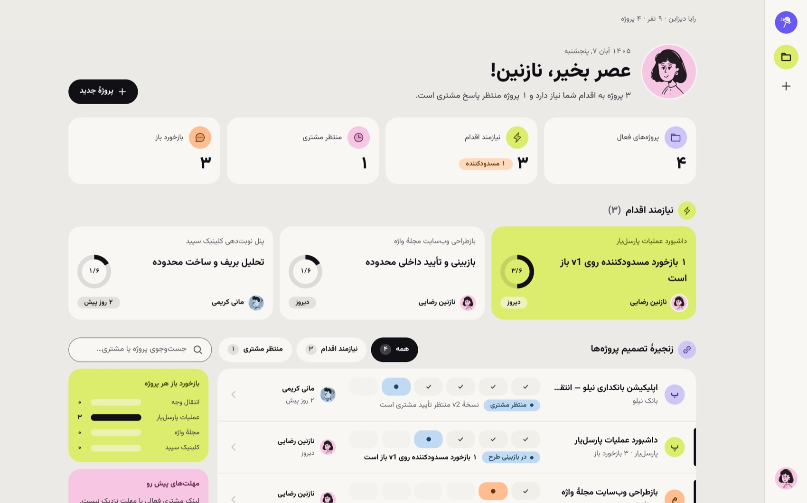
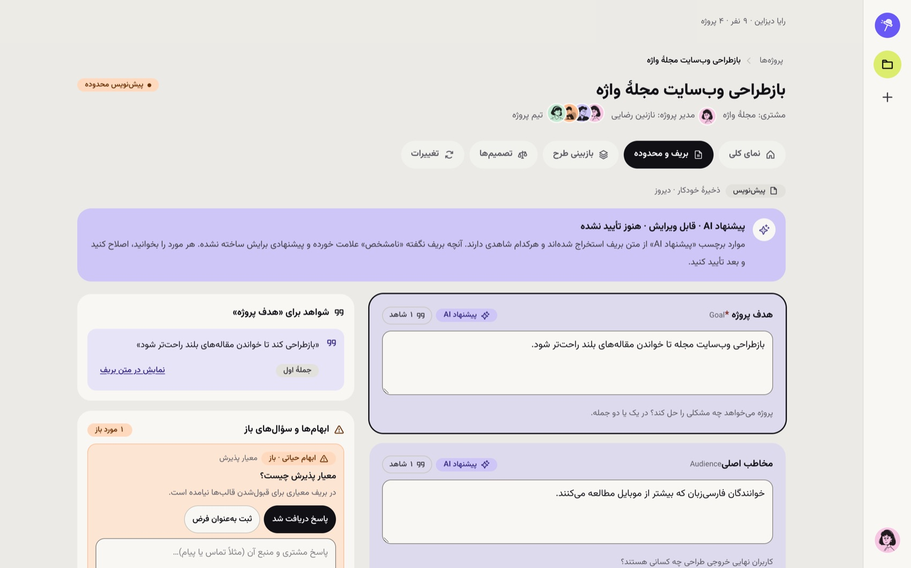
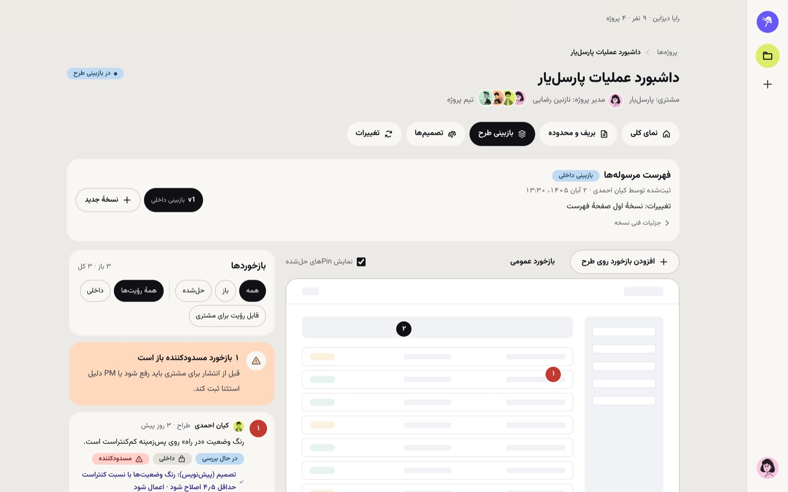
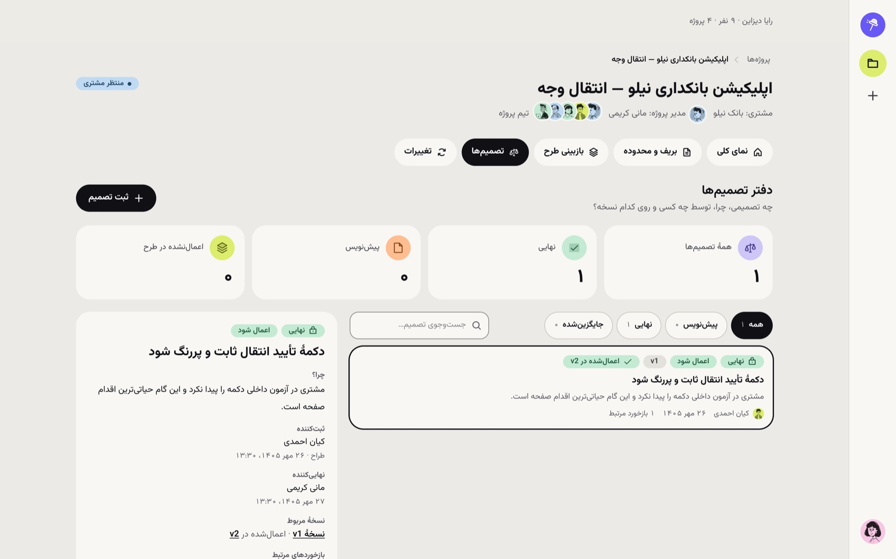
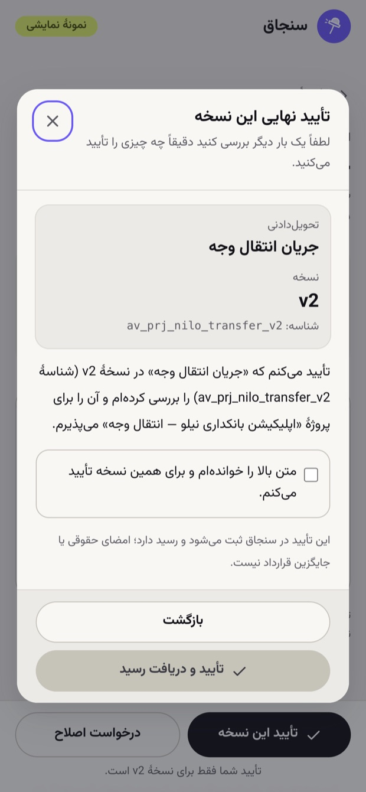
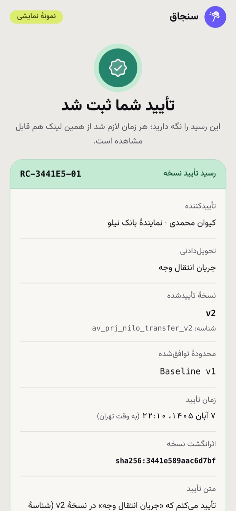
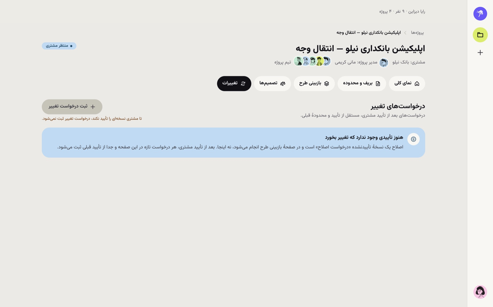
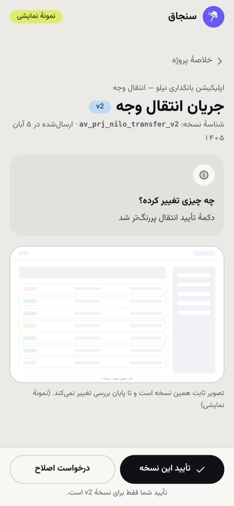

«این تصمیم را کی و چرا گرفتیم؟» و «مشتری دقیقاً کدام نسخه را تأیید کرد؟» پرسشهایی هستند که سنجاق باید در چند ثانیه جواب بدهد.
در استودیوی طراحی، هر پروژه صدها تصمیم کوچک دارد: کدام نسخه نهایی است، چرا رنگ وضعیت عوض شد، آیا فلان درخواست جزو قرارداد بود یا نه. این اطلاعات معمولاً بین ایمیل، چت و فایلهای طراحی پراکنده است. وقتی مشتری میگوید «این را نخواسته بودیم»، تیم باید بین پیامها دنبال شاهد بگردد.
تأیید شفاهی یا «لایک» در چت سند نیست؛ تغییر بعد از تأیید بدون ردپاست؛ و مشتری نمیداند دقیقاً چه چیزی را پذیرفته است.
صداقت دربارهٔ دامنه: مسئله از بریف محصول و تجربهٔ کار استودیویی استخراج شده است و این پروژه با مصاحبه یا آزمون با کاربر واقعی اعتبارسنجی نشده. در بخش «محدودیتها» توضیح دادهام چه چیزهایی هنوز نیاز به آزمون دارند.
هر پروژه در سنجاق یک زنجیره دارد. هر حلقه فقط وقتی بسته میشود که حلقهٔ قبل بسته شده باشد و هر حلقه به نسخه و تصمیم مشخصی ارجاع دارد.

اول صبح مشخص است کدام پروژه مسدود است و قدم بعد چیست.
یک لینک ساده برای دیدن نسخهٔ منتشرشده و تأیید یا درخواست اصلاح.
رسید و دفتر تصمیمها، مرجعی قابلارجاع در اختلافهاست.
بریف خام مشتری بهندرت کامل است. سنجاق از متن بریف هدف، مخاطب و معیار پذیرش را استخراج میکند، اما با قواعد سختگیرانه.

تا ابهامهای حیاتی (مثل «معیار پذیرش چیست؟») با پاسخ مشتری یا فرض ثبتشده بسته نشوند، محدوده تأیید نمیشود. با تأیید، Baseline v1 ساخته و قفل میشود.
اگر AI بیشاهد «بنویسد»، تیم یا به آن بیشازحد اعتماد میکند یا کلاً نادیدهاش میگیرد. برچسب منبع و وضعیت «تأییدنشده» کار بازبینی را سریع و مسئولیت را روشن نگه میدارد. این قفل فقط در UI نیست؛ در منطق دامنه (Reducer) هم اعمال میشود تا با هیچ مسیر دیگری دور زده نشود.

نسخهٔ منتشرشده برای مشتری هرگز ویرایش نمیشود. اصلاح یعنی نسخهٔ جدید. هر نسخه شناسه و اثرانگشت (sha256) دارد، اما در بخش «جزئیات فنی نسخه» میماند تا حواس طراح را از کار اصلی پرت نکند.
هر بازخورد میتواند داخلی باشد یا برای مشتری دیده شود. فیلتر «قابل رؤیت برای مشتری» نشان میدهد دقیقاً چه چیزی به مشتری میرسد.
اگر تصمیمی عوض شد، تصمیم تازه ثبت میشود و تصمیم قبلی را با supersedesId جایگزین میکند. تاریخچه میماند و «چرا عوض شد؟» جواب دارد.

مشتری بدون ورود به پنل استودیو، از یک لینک اختصاصی نسخهٔ منتشرشده را میبیند. دکمهٔ «تأیید این نسخه» مستقیم تأیید نمیکند؛ دیالوگی باز میشود که دقیقاً میگوید چه چیزی (تحویلدادنی، نسخه، شناسه) تأیید میشود و کاربر باید با یک چکباکس صریح موافقت کند.
بعد از تأیید، رسید صادر میشود: تأییدکننده، نسخهٔ تأییدشده، محدودهٔ توافقشده، زمان (به وقت تهران) و اثرانگشت نسخه. رسید فقط یک بار و فقط در Reducer ساخته میشود؛ دو کلیک پشتسرهم رسید دوم نمیسازد.
صفحههای مشتری فقط از یک Projection داده میگیرند. یادداشت داخلی، ساعت داخلی و طبقهبندی هرگز به آنها نمیرسد و تست خودکار این مرز را میسنجد.
متن دیالوگ صریح میگوید این تأیید در سنجاق ثبت میشود و جایگزین امضای حقوقی قرارداد نیست؛ ادعای حقوقی نکردهایم.


تصویرها از نمونهٔ ساختگی گرفته شدهاند (نشان «نمونهٔ نمایشی» روی صفحه دیده میشود): دیالوگ تأیید و رسید ثبتشده.

سختترین بخش مسئله، تغییرهای دیرهنگام است. قاعدهٔ سنجاق ساده است: درخواست تغییر فقط بعد از رسید ساخته میشود و به Baseline و رسید مشخصی وصل میماند. مسیر آن این است:
Baseline و رسید بدون هیچ تغییری میمانند.
Baseline v2 ساخته میشود؛ هرگز Revision مستقیم روی Baseline قبلی.
نسخهٔ پیشنهاد (ProposalVersion) بعد از ارسال عوض نمیشود. نتیجه: بحث «این جزو قرارداد بود یا نه؟» روی داده انجام میشود، نه حافظه.
فاز ۴ (پروتوتایپ Medium-Fi) در پنج Milestone (W1 تا W5) پیش رفت. پس از هر Milestone توقف میکردیم و پیش از ادامه تأیید صاحب محصول را میگرفتیم. فاز ۵ به High-Fi و سیستم طراحی اختصاص یافت.
| گام | چه شد | چه تصمیمی گرفته شد |
|---|---|---|
| منطق اول | دامنه و Reducer خالص و تستشده، پیش از UI | Guardها (قفل Baseline، نقش، idempotency) در Reducer بمانند، نه فقط در UI |
| پروتوتایپ Medium-Fi | چهار Flow کامل: بریف ← Baseline؛ نسخه و Pin ← تصمیم؛ تأیید ← رسید؛ تغییر | تمام داده ساختگی و صریحاً Mock اعلام شود |
| High-Fi و سیستم طراحی | توکنها، پلهٔ تایپوگرافی، کامپوننتها | اندازهٔ دلخواه ممنوع؛ همهچیز از توکن |
| بازبینی جهت بصری | پنج تصویر مرجع از صاحب محصول؛ دو طرح ترکیب و تأیید شد | کِرِمی، کاشی پاستلی، قرص مشکی، زنجیره بهشکل زمانبندی |
| حسابرسی | ممیزی فنی و UX، رفع ایرادها در اولویت P1 تا P3 | بخش بعد |
نسخهٔ اول فقط خنثی بود و زنجیره (ارزش اصلی) نمود بصری نداشت. بعد از بازخورد، رنگها معنا گرفتند: لیمویی = نیازمند اقدام، لاوندر = AI یا منتظر مشتری، آبی = نسخه، نارنجی = هشدار، نعنایی = تأییدشده، مرجانی = مسدودکننده.
حلقه، نوار و زنجیره فقط از دادههای واقعی ساخته میشوند. آمار یا درصد ساختگی ممنوع است. وضعیت هیچگاه فقط با رنگ منتقل نمیشود و متن همراه آن است.
توکنهای رنگ: بوم و سطح کِرِمی، مرکب، هفت پاستل معنادار و بنفش برند (فقط فوکوس و لوگو).
Vazirmatn Variable با پلهٔ هفتمرحلهای (از ۱۲ تا ۳۶ پیکسل) و ارتفاع خط بالا (۱٫۴ تا ۱٫۸۵) برای خوانایی فارسی. سلسلهمراتب با اندازه و وزن است، نه فقط رنگ.
ویژگیهای منطقی CSS (ms-، ps-، start-)، شناسههای لاتین مثل v1 جدا از جهت جمله، ارقام فارسی، تاریخ شمسی با منطقهٔ زمانی تهران و واحد «تومان» همیشه صریح.
Button (قرص؛ اصلی مشکی)، Badge پاستلی با نقطهٔ وضعیت، Avatar، Segmented، StageTrack (زنجیره بهشکل زمانبندی)، Card، Dialog بومی، فرم، Skeleton و EmptyState.
همهٔ تصویرسازیها از یک مجموعه با پسزمینهٔ شفاف انتخاب شدهاند تا روی هر رنگ کاشی بنشینند؛ تصویر هیچوقت روی متن نمیافتد.

آزمون قابلیت استفاده با چند استودیوی واقعی و سنجش همین پرسشها: «چقدر طول میکشد تصمیم قبلی پیدا شود؟»؛ سپس Backend و احراز هویت واقعی، آزمون Screen Reader، و گسترش پنل مشتری.